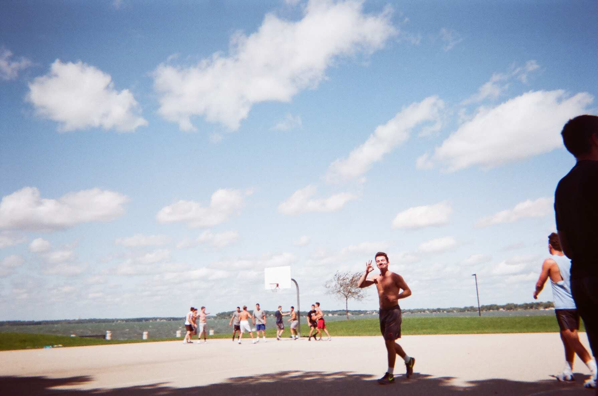

Disposable cameras capture the moment and in our current day and age, we are lacking of these moments. I hope you enjoy. All of my scenic pictures are all one take pictures.
The pictures you can't check how you look, the ones where you can't edit it or the ones you get to post right away onto your social media.does.
Here are some of the pictures I have taken with a disposable camera
